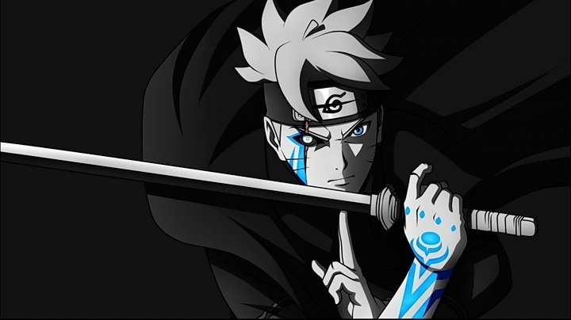

Rank And Rewards
𝗟𝗘𝗩𝗘𝗟𝗦 𝗔𝗡𝗗 𝗥𝗘𝗪𝗔𝗥𝗗𝗦 :
✎You can level up just by chatting
✎High levels gets rewarded with cool roles
✠ğ—¥ğ—¢ğ—Ÿğ—˜ğ—¦ :※ ADMIN : this role will keep untouched for the high administration and management level it has
※ Moderators : a well trusted people that can carry the server in the shadows this role can be only given in specific circumstances
※ ğ˜Œğ˜ğ˜¥ğ˜¦ğ˜³ : The kings of the server . Who keeps the chat 24/7 This role can be given by achieving level 30!! When reaching this u can choose between Netflix account . 400 rp account or spotify premium
※ VIP : The top members This role can be given by reaching level 10 !! Ps: u’ll get x2 ( 140 rp accounts) just by achieving this level
※ OTAKU : Special role can be only given by winning a Anime Tournament
※ ELITE : cool and promising people U can get this role by reaching level 5
※ Rookie : New friends to the server very promising fearless and unstoppable :fire::fire: This role will be given immediately after joining the server
※ BOTS : cool robots that makes the server’s experience better